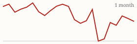
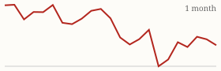

| Today's briefing for operators |
Top line: Markets price in a December Fed hike during a housing recession |
|
| Monday, November 16, 2026 | Late Edition | Curated from 64 voices on X |
|
Real Estate
The Fed May Hike Into a Housing Recession for the First Time Ever
Markets put the odds of a December rate hike above 98%, while home sales are running at just 4.3% of the homeowner stock, the weakest rate Nick Gerli has on record.
By @nickgerli1 |
Chart of relative U.S. home sales as a share of the homeowner stock. Image via @nickgerli1 on X | Nick Gerli says futures markets now give the Fed better than 98% odds of raising rates in December. If it does, it would be the first time in U.S. history the Fed started a hiking cycle in the middle of a housing recession. Relative home sales are already down to 4.3% of the homeowner stock, the worst rate he has on record. |
With the 30-year mortgage already back around 7.5%, a hike would squeeze retail buyers even harder. For an operator, that points two ways: more sellers who need a fast, certain exit, and fewer buyers on the back end. Tighten your buy box, underwrite slower resale timelines, and keep cash and lines of credit ready rather than counting on cheaper money in 2027. |
|
| Read on X |
|
Mortgage Rates & Markets | Mortgage Rates Today's average lender rates | 30-year fixed | 7.50% | +0.08 | | 15-year fixed | 7.03% | +0.03 |
Daily change vs. prior day. Source: Mortgage News Daily, as of 11/13/2026 (updated weekdays about 4 PM ET). |
|
S&P 500 Close of Fri, Nov 13 (markets closed since; last close shown) S&P 500 7,561.67 ▼ -30.73 (-0.40%)  Yahoo Finance chart data (daily closes) |
|
Nasdaq Composite Close of Fri, Nov 13 (markets closed since; last close shown) Nasdaq Composite 25,136.27 ▼ -229.82 (-0.91%)  Yahoo Finance chart data (daily closes) |
|
| Real Estate & Deals | The house Jacob Naviaux bought at a foreclosure auction. Image via @Jacob_Naviaux on X Bought at Auction for $189.5K, Selling Near $285K By @Jacob_Naviaux Jacob Naviaux picked up a 2001-built house at a foreclosure auction for $189,542; it last sold for $179,000 in 2019. He expects to sell for at least $285,000 after a cosmetic rehab. Auctions are one place a falling market still hands disciplined buyers a real spread. Read on X |
The Real Money Is Made in Operations By @loganjrankin Logan Rankin's warning: some investors spend more time raising money for deals than running them. Fees from doing deals aren't the same as creating value, and the operators who build lasting wealth focus on execution after the close. Read on X |
In This Market, Profit Comes From Fewer Errors By @NickMaccini Nick Maccini says everyone is chasing the same leads with the same marketing, so the winner is often whoever makes the fewest small mistakes. More profit may come from tightening follow-up, pricing and process, not from buying more leads. Read on X |
Big Companies Are Replacing Teams With Bots By @coleruudjohnson Cole Ruud-Johnson points to Mercury's CEO saying large companies are swapping sales, marketing and ops teams for AI bots, and argues the same tools can find real estate deals. He's sharing his bot setup and running a free Zoom walkthrough Tuesday. Read on X |
| AI Briefing | Qwen4-Max launch announcement. Image via @Alibaba_Qwen on X Alibaba Launches Qwen4-Max By @Alibaba_Qwen Qwen4-Max is a new mixture-of-experts model with native vision and a 1M-token context window. Alibaba says it beats Qwen3.8-Max with up to about 50% fewer tokens at lower cost per task, and it's already live on OpenRouter and Vercel. Read on X |
DeepSeek Opens Its App Features to Developers By @deepseek_ai Search, file handling, links, safety and voice from the DeepSeek App are now available through the DeepSeek API, along with standalone OCR, speech-to-text and text-to-speech. Cheaper building blocks for custom tools. Read on X |
Jensen Huang Discusses a Return to Nvidia By @kimmonismus Days after Nvidia's board pushed him out, Jensen Huang is discussing a possible comeback, the Financial Times reported. Meanwhile WSJ reports Treasury Secretary Bessent urged the board to pick an outsider. A live lesson in founder and succession risk ahead of Nvidia's earnings. Read on X |
The AI Ad Stack Behind $1.4M in ARR By @gregisenberg Greg Isenberg breaks down an AI-made ad that produced $1.4M in annual recurring revenue for a startup: a voice clone, AI video, an upscale step, a transcript check for mispronunciations, and Claude Code or Grok Bot running the whole pipeline. Read on X |
Make Your First Bot Your Chief of Staff By @Sabrina_Ramonov Sabrina Ramonov's setup tip: make your first Grok Bot a chief of staff, the one bot you talk to, which then creates and manages all the others. She shares three starter prompts to set it up. Read on X |
AI Mammography Finds 29% More Cancers By @PeterDiamandis Peter Diamandis highlights a Swedish trial of 105,000+ women where AI-supported screening caught 29% more cancers with no significant rise in false positives, while cutting radiologist reads by 44%. More proof AI can raise quality and cut workload at once. Read on X |
| Business & Leadership | Ignorance Isn't Blocking You. Cowardice Is By @AlexHormozi Alex Hormozi: stop waiting until you have all the information to decide. Most of entrepreneurship is figuring it out, and you can't figure something out if you already know the answer. Read on X |
Skill Takes Reps, Not Time By @LeilaHormozi Leila Hormozi says getting good isn't about time, it's about repetition. Five reps a week takes a year; five a day takes two months. Same skill, same reps. Train your team the same way: more reps, faster feedback. Read on X |
Being Small Is a Competitive Advantage By @ChrisRamsey60 Chris Ramsey notes bigger competitors carry more overhead, layers of approval and more reasons to avoid risk. A small company can decide and act in a day, so use that speed. Read on X |
The Three Levels of Money By @danmartell Dan Martell's ladder: Level 1 trades time for money, Level 2 trades money for time, Level 3 trades money for money. A useful check on where you're spending your own hours as CEO. Read on X |
|
The Hyre Times is compiled each morning by Groky from public posts on X plus public rate and market data. Summaries reflect the authors' own claims and have not been independently verified. Not financial advice. © 2026 Hyre Times. |
|